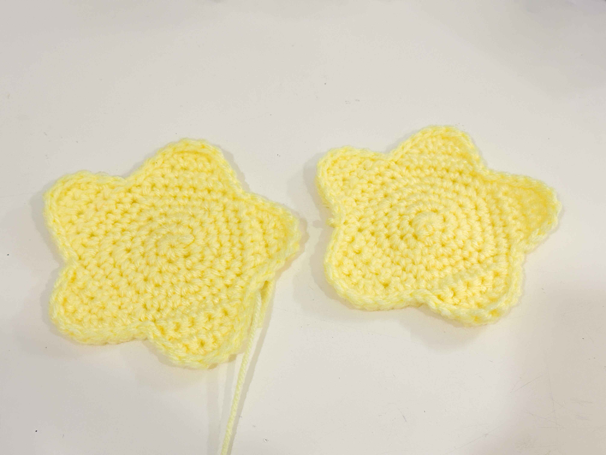
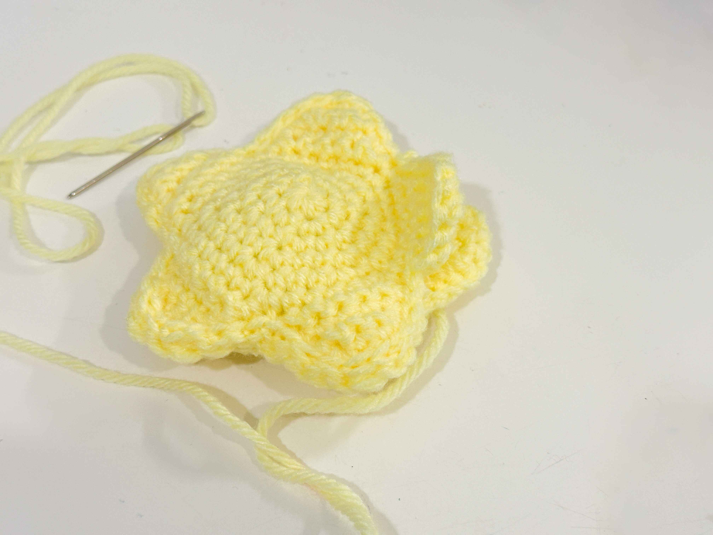
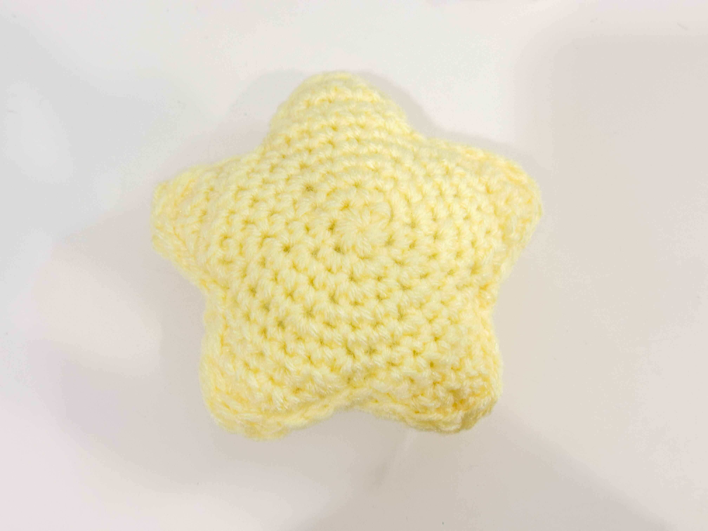
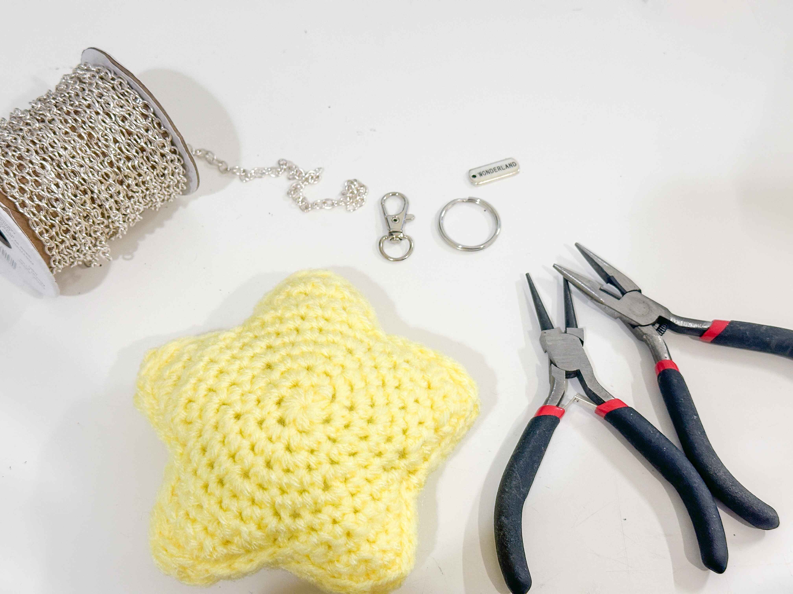
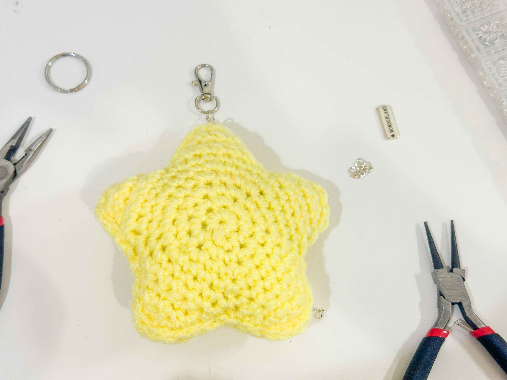

I changed the design a bit to make it the way I want it to look but if you are a beginner, just follow the video before attempting to change anything.
You will need a keychain and some chains that you want to use.
Make sure to have two stars so you can sew it together.
Sew the two stars together after putting the stuffing inbetween the two sides.
Now you have your plushie.
Grab your plushie and keychain supplies.
Use the pliers and open the end link on your chain to loop on the top of the plush.
Put the loop through one of the loops on your plushie.
Think of this as if you're just attachiching the metal part.
It's a really simple process.
Go to the next page to see the final images and other examples of crochet keychains.